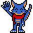
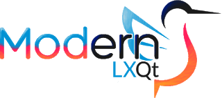

Hiya! Welcome to my official and personal website, where I put... nice stuff! ^^
- FAQ / Info -
👉 Who are you 'n' which character do you identify? 👈
- Who are you 'n' which character do you identify? -

Salve, sono Stefano (anche conosciuto come Stegon, Steven e Steveno), nato nel 4 Dic. 1998. Entrato per la prima volta su Telegram nel lontano Luglio 2016, mentre ero ancora su WhatsApp e cercavo una alternativa migliore.
Stegon è composto da due parole unite, ossia Steven (che è un diminutivo del mio nome reale) e Dragon (visto che amo tanti i draghi). Ah! Non chiamatemi mai con la storpiatura Stregon, grazie...
(La descrizione del mio personaggio può coincidere, in alcune parti, con me come persona reale)
Mi identifico come un giovane drago blu antropomorfo privo di corna ed ali ed abito in una foresta vasta lontano dai luoghi industriali.
Gran parte della mia forza fisica è situata nella parte bassa, avendo così la possibilità di correre ad alta velocità, effettuare dei salti alti e fare ben uso della coda in molteplici modi.
Mi potete avvistare in gran parte dei luoghi, anche in quelli che non ho mai visitato, mentre mi porto uno zaino da avventuriero e la comoda, affidata e flessibile sciarpa rossa.
Sono un tipo piuttosto tranquillo e gradisce ascoltare quel che gli altri dicono (soprattutto se le informazioni sono utili per il mio arricchimento personale) ed osservare l'ambiente in cui son situato e sono anche piuttosto ficcanaso ed indipendente, tanto da rendermi un buono caotico.
👉 Why don't you often post many posts? 👈
- Why don't you often post many posts? -
* I don't have much time and ideas to conceive, write and elaborate them;
* I prefer to be much more on the quality side than on the quantity;
* Don't age previous posts too quickly.
👉 When was this website created? 👈
- When was this website created? -
Regarding the Blogger version (reachable in the Post option at the top) before it started March 2017 and there were already other websites previous to this, then closed and / or deleted later (some are still there but not accessible). About the GitHub version (where you are now) it was published on May 14, 2020, while I had the right commitment and time, since it's been so long since I wanted to do.
Stegon's Ownpage uses a template pre-packaged but personalized by me heavily and made light, so navigation will be faster and more fluid and suitable for any platform. If there is any problem or lack in the future, I will stay updated to do something and get someone to help out with the website than anything else.
👉 What devices and OSs do you have? 👈
- What devices and OSs do you have? -
- DEVICES -
* Lenovo IdeaPad G580 (Main PC)
* eMachines HM02_PT (Secondary PC)
* Xiaomi Pocophone F1 (Main Smartphone)
* Alcatel Pixi 4 5" (Secondary Smartphone)
* Nintendo New 3DS XL
* Nintendo Wii U - Premium Pack
* Nintendo Switch
- OSs -
* Manjaro (Main PC)
* MX Linux (Secondary PC)
* Android (Smartphone)
👉 What Social can I follow you + Friend codes? 👈
- What Social can I follow you + Friend codes? -
By pressing the Social option (top) or scrolling down to the whole web page, you can find the buttons where you can access one of these Socials. The Telegram and Ludomedia buttons are on the pages of this website where there is more information about my account of these Socials.
3DS = 4167-4652-0835 (Nacitendo)
Wii U = Nacitendo
Switch = SW-0639-6262-7994 (Steveno98)
👉 Where are your articles located? 👈
- Where are your articles located? -
By pressing the Post option (top) it is possible to access the section where there are the articles / posts of what I wrote to read and the possibility to access the Blogger version of this website, where, unfortunately, it uses JavaScript, however there is the possibility to comment in every single article.
- Other -
It is a website used to archive the questions of the day of a daily event.
There are C++ codes and more written by myself.
There are games created by myself.
👉 Modern LXQt 👈
👉 Modern LXQt 👈

It is a custom distribution with the LXQt inside. It is powerful, fast, light and also modern in its appearance... with already pre-installed programs very useful for its work activities.
Unfortunately, it is discontinued...
It is a GNU / Linux distribution that makes use of a custom LXQt.